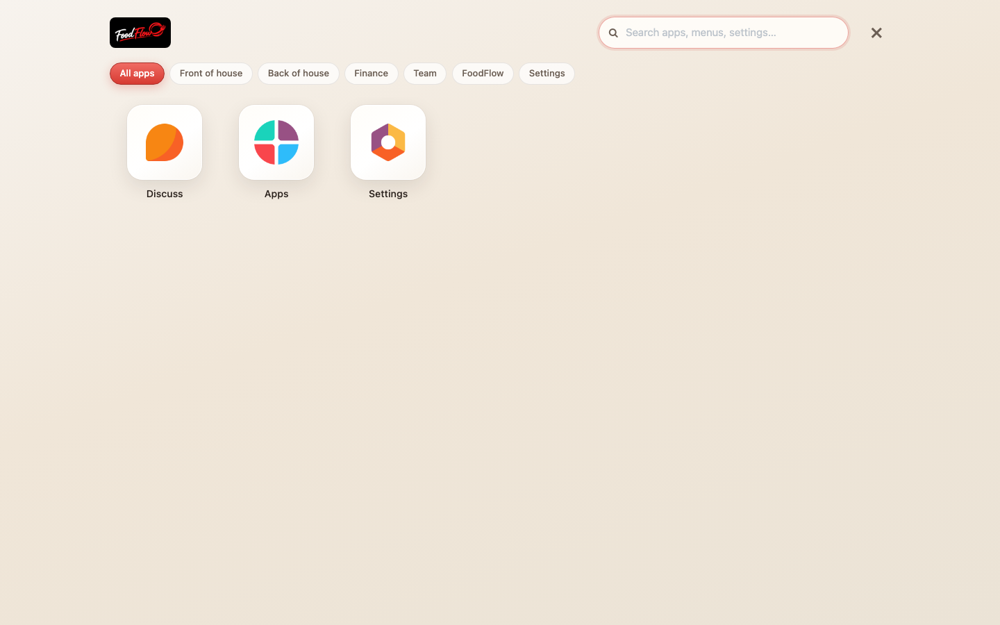
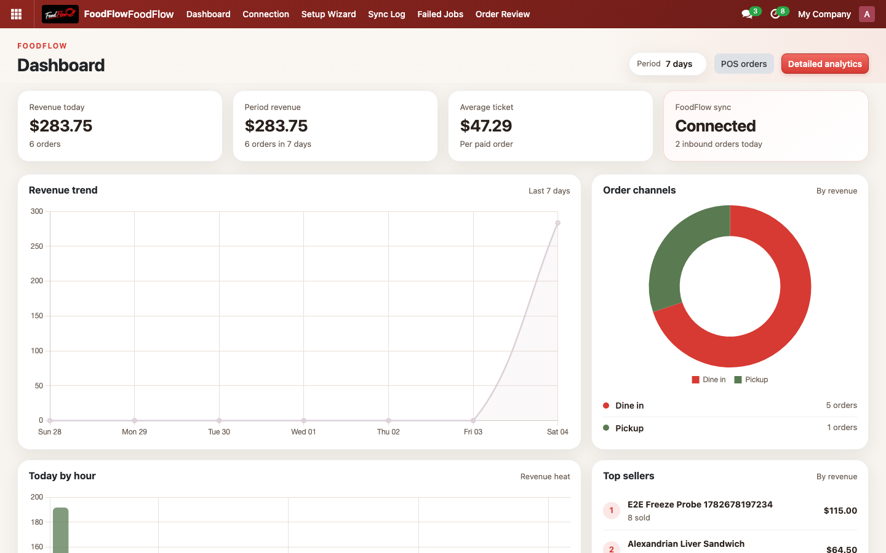

Theme | Restaurant | Cafe | Free | LGPL-3
foodflo.app is the online platform for restaurants: QR menu, online ordering, WhatsApp bot, loyalty, kitchen display, and reservations. Theme Basic (this free module) styles your Odoo back office. Theme Pro adds POS v2 and live sync with a FoodFlow subscription.
Your branded digital menu, delivery and pickup - no marketplace commissions.
Customers order by chat; orders sync to Odoo with Theme Pro and the connector.
Phone-based identity and repeat-guest rewards on the FoodFlow platform.
Kitchen display, table bookings, and waiter tools included on foodflo.app.
Back-office hospitality only. Your POS stays standard Odoo until you upgrade to Pro.

Desktop - warm app launcher and hospitality surfaces
Navbar, favicon, login, user menu white-label. FoodFlow details card in the app launcher.
Polished home menu on Community: categories, search, and mobile bottom bar.
Cream backgrounds, soft cards, forms, lists, kanban, and Discuss for back-of-house teams.

Mobile - touch-friendly launcher and bottom navigation
Everything in Basic, plus POS v2 layout, product cards, channel pills, FoodFlow Connector sync, and a revenue dashboard. Included with a FoodFlow plan - not on Odoo Apps.

Pro - POS register

Pro - Revenue dashboard

Pro - Mobile POS

Pro - Product cards
Upgrade to FoodFlow Theme Pro and the FoodFlow Connector with a subscription at foodflo.app.
See Theme Pro at foodflo.appFoodFlow - foodflo.app - Odoo 17 / 18 / 19 - Community and Enterprise - LGPL-3
Install only one theme module. Basic is free on Odoo Apps; Pro ships with a FoodFlow subscription.